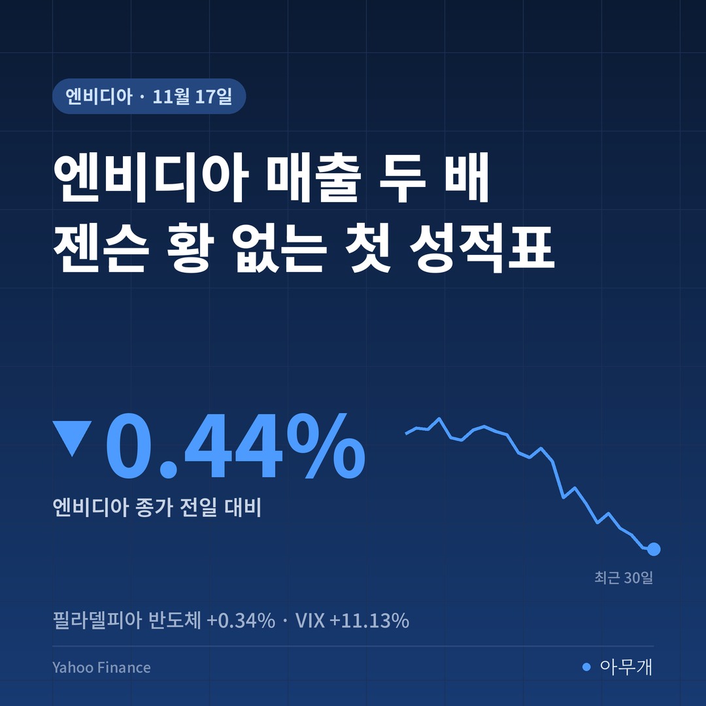
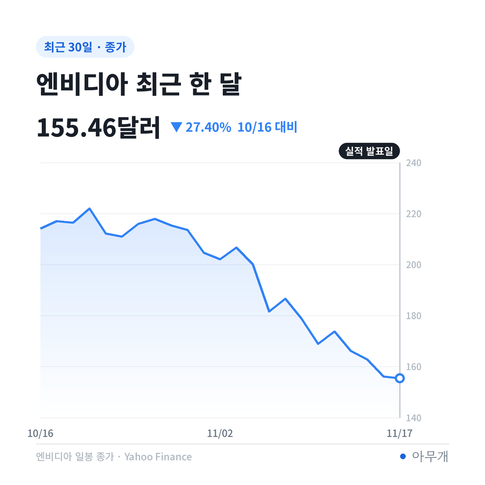
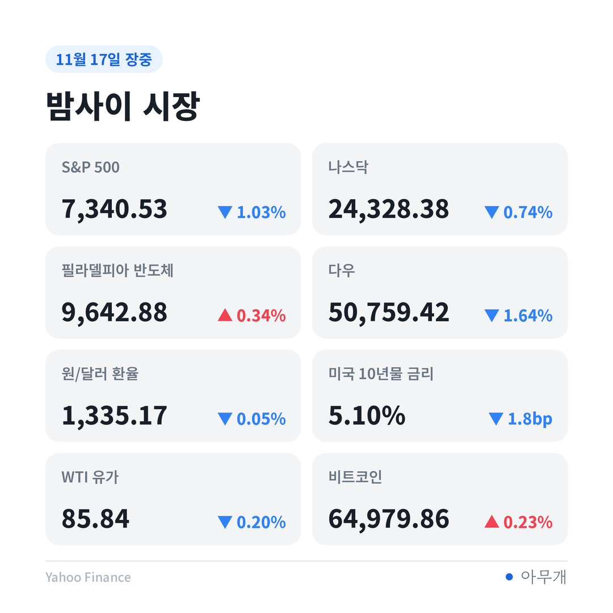
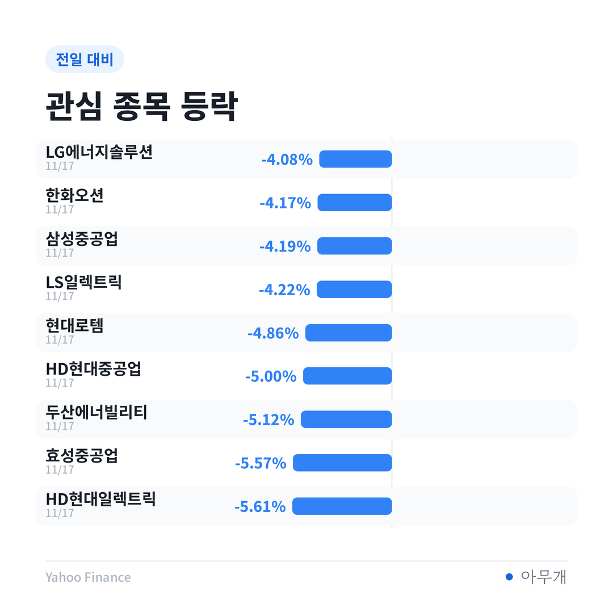

📷 사진 1 자리
전망을 넘긴 분기, 중국은 뺀 전망
엔비디아는 17일(현지) 8~10월 매출이 1,158억 달러로 1년 전보다 103% 늘었다고 발표했어요[1][2][3]. 런던증권거래소그룹(LSEG)이 모은 전망치는 1,091억 달러였어요[1]. 차이는 67억 달러, 전망보다 6.14% 많은 셈이에요.
📷 사진 2 자리
주당순이익(EPS)도 2.68달러로 예상치 2.47달러를 넘었어요[1]. 데이터센터 매출이 1,076억 달러로 전체의 92.9%예요. 1년 전보다 110% 늘었어요[1]. 차세대 플랫폼 '베라 루빈 NVL72' 출하가 이번 분기에 시작된 영향이에요[1].
다음 분기 전망은 1,300억 달러선이에요[1]. 3분기보다 약 12% 많은 숫자예요[1]. 회사는 이 전망에 중국 데이터센터 매출을 하나도 넣지 않았다고 따로 적었어요[1].
| 항목 | 3분기 실제 | 비교 |
|---|---|---|
| 매출 | 1,158억 달러[1] | 전망 1,091억 달러[1] |
| EPS | 2.68달러[1] | 전망 2.47달러[1] |
| 데이터센터 매출 | 1,076억 달러[1] | 전체의 92.9%, 1년 전보다 +110%[1] |
| 4분기 전망 | 1,300억 달러선[1] | 중국 데이터센터 매출 제외[1] |
실적이 나온 뒤 시간외 거래에서 주가는 3~4%대 올랐어요[1][2]. 연합뉴스는 미 동부 오후 4시 30분 기준 161달러선이라고 전했어요[1].
지난주 남긴 세 질문
이 블로그는 15~17일 글에서 실적 밤에 볼 것으로 세 가지를 꼽았어요. 후계 일정, 파트너 투자 축소 여부, 싱가포르 등 지역 매출 설명이에요. 발표 내용과 하나씩 맞춰 보면 이래요.
| 지난주 질문 | 실적 밤에 나온 것 | 채점 |
|---|---|---|
| 후계 일정 | 이사회 의장 "황 복귀 계획 없다"[2][3], 회사 안팎에서 후임 물색[5][6] | 반쯤 풀림: 복귀는 접었지만 선임 시점은 없음 |
| 파트너 투자 축소 | "생태계는 지원하되 투자는 엄격히 심사"[7][8] | 방향은 나옴: 줄인다는 말은 없지만 문턱은 높아짐 |
| 싱가포르 등 지역 매출 | 수집한 기사에서는 설명을 찾지 못함 | 안 풀림: 분기보고서(10-Q)를 봐야 함 |
후계 쪽은 하루 사이에 정리가 빨랐어요. 황은 실적 발표 몇 시간 전 첫 입장문에서 이사회가 원하면 돌아오겠다고 밝혔어요[4]. 그런데 하비 존스 의장이 바로 선을 그었어요[2][3]. 존스는 엔비디아 역사상 첫 이사회 의장이에요[5].
투자 쪽은 말의 온도가 바뀌었어요. 크레스 임시 CEO는 원래 공격적인 금융 지원에 신중했던 사람으로 알려져 있어요[9]. 오픈AI 오하이오 데이터센터 보증도 처음 거론된 2,500억 달러에서 1단계 약 1,200억 달러로 줄었다는 분석이 있어요[9].
실적 전 하루, 지수가 먼저 말한 것
| 지표 | 종가 | 전일 대비 |
|---|---|---|
| 엔비디아 | 155.46달러 | -0.44% |
| 필라델피아 반도체 | 9,642.88 | +0.34% |
| 나스닥 | 24,328.38 | -0.74% |
| 다우 | 50,759.42 | -1.64% |
| VIX(공포지수) | 25.46 | +11.13% |
| 미국 10년물 금리 | 5.103% | -1.8bp |
정규장에서 엔비디아는 0.44% 내린 155.46달러로 마감했어요. 나흘 연속 하락이에요[4]. 같은 날 필라델피아 반도체지수는 0.34% 올랐어요.
📷 사진 3 자리
실적을 앞두고 엔비디아만 눌려 있었다는 뜻이에요. 대신 시장 전체의 긴장은 컸어요. 다우가 1.64% 빠졌고 VIX는 25.46으로 하루 새 11.13% 뛰었어요.
엔비디아 주가는 최근 한 달 27.40% 빠졌어요. 시간외 반등은 그 낙폭의 일부만 되돌린 수준이에요.
SK하이닉스 계좌로 옮겨 보면
엔비디아 실적이 나오기 전날 코스피는 4,968.48로 마감했어요. 종가가 4,000대로 내려온 건 2월 2일 이후 처음이에요[11]. 삼성전자와 SK하이닉스는 올해 장중 고점보다 각각 49.19%, 63.24% 낮은 자리예요[11].
SK하이닉스는 17일 1,098,000원(-1.96%)으로 마감했어요. 회사 분기보고서 기준 1~9월 엔비디아 관련 매출은 약 35조원, 전체의 14.8%로 추정돼요[12][13]. 1년 새 101.5% 늘었어요[12]. 엔비디아 매출이 두 배가 된 속도와 거의 같아요[1][12].
그래서 오늘 실적에서 SK하이닉스 주주에게 더 중요한 줄은 데이터센터 +110%보다 '투자는 엄격히 심사' 쪽이에요[7][8]. 엔비디아가 자금을 대 주던 고객이 덜 사면 HBM(고대역폭 메모리) 주문도 그만큼 덜 늘 수 있어요.
17일 국내장에서 낙폭이 더 컸던 쪽은 반도체보다 전력기기·조선·원전이었어요. HD현대일렉트릭 -5.61%, 효성중공업 -5.57%, 두산에너빌리티 -5.12%예요. 데이터센터 투자와 함께 움직여 온 종목들이라 엔비디아의 '투자 심사' 발언이 이쪽에 먼저 닿을 수 있어요.
📷 사진 4 자리
이번 주 갈림길
| 시나리오 | 무엇을 보면 되나 | 예상되는 영향 |
|---|---|---|
| 숫자가 이긴다 | 엔비디아가 시간외 161달러선[1]을 정규장에서 지키는지 | 반도체 전반 반등, SK하이닉스 1,098,000원 위 회복 시도 |
| 투자 심사가 이긴다 | 네오클라우드 업체 주가·자금 조달 뉴스[9] | 전력기기·데이터센터 관련주 약세가 이어질 수 있음 |
| 지역 매출이 다시 불거진다 | 베선트 재무장관의 '열흘' 답변 기한[14], 10-Q의 지역별 매출 | 실적 반등이 짧게 끝날 수 있음 |
숫자로는 반박하기 어려운 분기예요. 그래도 이번 발표에서 새로 나온 말은 '엄격히 심사'였어요. 황 시절의 공격적인 자금 지원과 결이 다른 신호로 읽혀요. 매출은 이번 분기 성적이지만 투자 문턱은 내년 고객사 주문에 영향을 주는 변수라 국내 반도체·전력기기 주주에겐 뒤쪽이 더 오래 남을 것 같아요.
✍️ 직접 보거나 들은 경험이 있으면 위 문단에 한두 줄 덧붙이세요 (이 안내 줄은 지우기)
반대로 보면 벤더 파이낸싱은 황 개인의 방침이 아니라 회사 전략이라 크게 줄지 않는다는 시각도 있어요[10]. 한화투자증권은 중국 물량이 막혀도 다른 고객의 미충족 수요가 흡수할 수 있다고 봤어요[10]. 4분기 전망을 중국 없이 1,300억 달러선으로 잡았다는 점도 이 시각을 뒷받침해요[1].
금요일까지 볼 것
참고한 기사
이 글은 정보 제공 목적이며 투자 권유가 아닙니다. 투자 판단과 책임은 본인에게 있습니다.
수치 출처: Yahoo Finance(11월 17일 종가, 원/달러 환율 등 일부 장중), 엔비디아 실적 발표(연합뉴스·한국경제·Yahoo Finance 보도), 각 기사.



